Исторические и справочные гербы


Venice
Путеводитель. Объектов в этом выпуске: 40.
OTIUM — практика нарочитого досуга. В античном смысле otium — не побег от работы, а время, когда внимание возвращается к памяти, пейзажу и мысли — без прикладного дедлайна.
Мы выстраиваем маршруты для неспешного присутствия, а не для чек-листа достопримечательностей: важно быть в месте, а не «потреблять» виды.
OTIUM — не туроператор. Это приглашение пройтись, остановиться и оставить маршрут незавершённым, если свет на фасаде заслуживает ещё минуты.
Исторические и справочные гербы
Путеводитель. Объектов в этом выпуске: 40.
Венеция — город в лагуне Адриатики, бывшая столица Венецианской республики.
Морская торговая империя, Готика и Возрождение, карнавал и венецианское стекло. Каналы, мосты и палаццо создают уникальную среду; город борется с наводнениями и круизным туризмом, оставаясь символом Италии.
Наполеон и Австрия сменили республику; присоединение к Италии сделало город частью национального государства. Туризм и круизы создают нагрузку на лагуну; Венеция ищет баланс между сохранением памятников ЮНЕСКО и жизнью местных жителей.
Ponte dell'Accademia

A favored photo spot for Salute and canal bends; wooden deck adds a slight spring under foot traffic.
Bridges here reflect shifting engineering and tourism pressure; wood remains a deliberate aesthetic choice.
Classic viewpoint tying art district to the main visitor loop.
Arsenale di Venezia
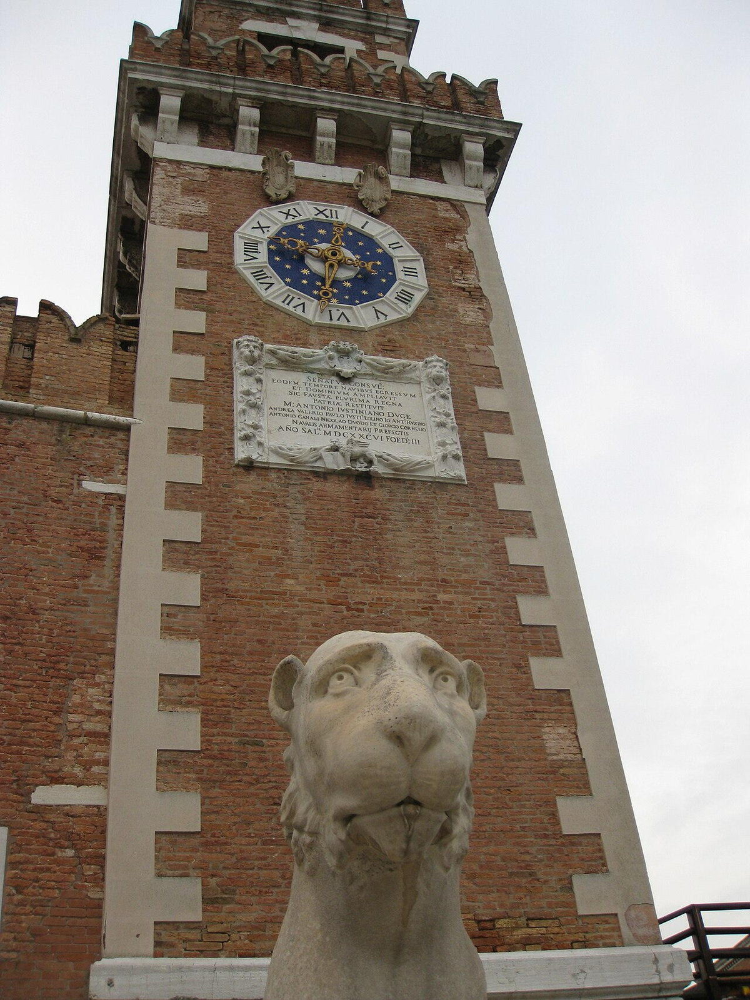
The monumental portal signals the Arsenal's importance; lions and reliefs perform maritime propaganda before you even enter the complex.
As the Arsenal grew, ceremonial architecture asserted state control over industry and navy.
A compact summary of Venice's military-industrial identity.
Basilica San Marco 31.10.2018.jpg
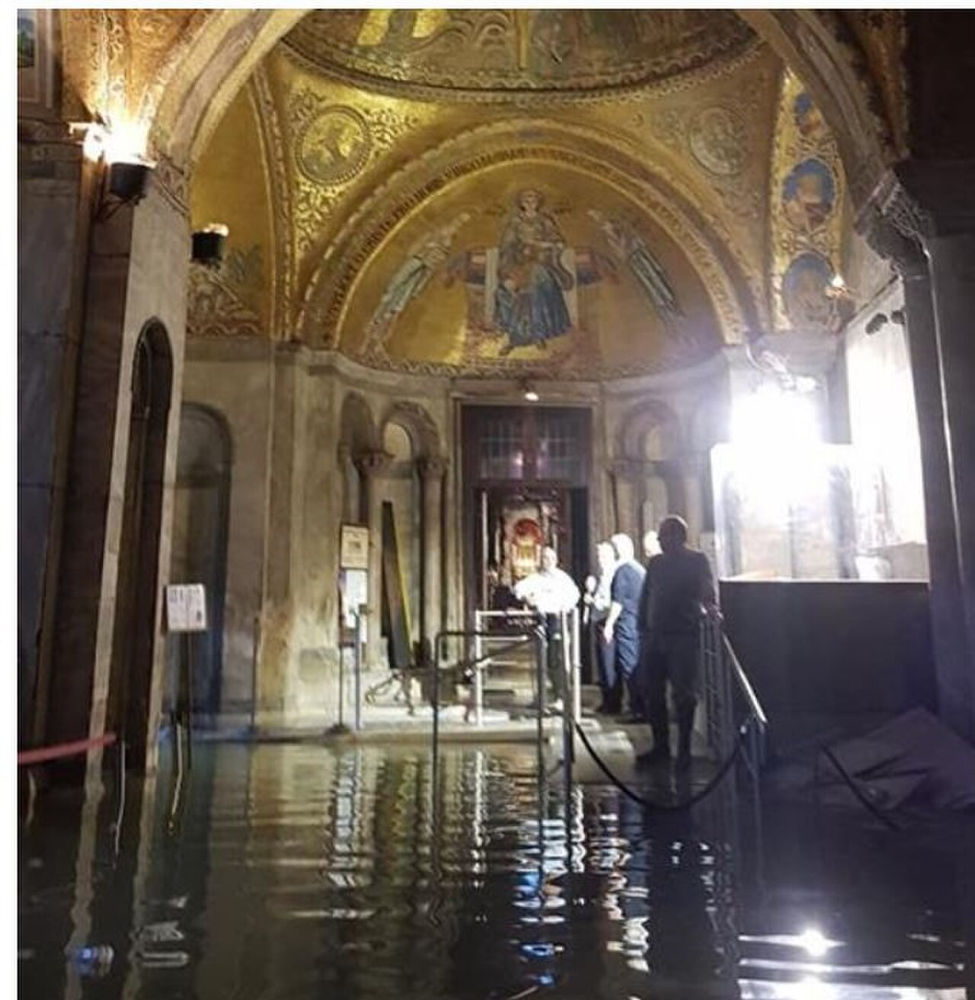
Ponte dei Sospiri

A small, sealed passage over a canal, best seen from nearby bridges; legend insists prisoners sighed at their last view of freedom.
Built as an administrative shortcut between interrogation rooms and incarceration spaces.
One of Venice's most photographed details—architecture turned into story.
Isola di Burano

Bright façades and lace tradition make it a photogenic half-day trip; mornings beat tour waves.
Lagoon fishing communities developed distinct identity; tourism now sustains crafts and cafés.
Venice's lagoon life beyond the stone center—color, craft, and water.
Ca' d'Oro
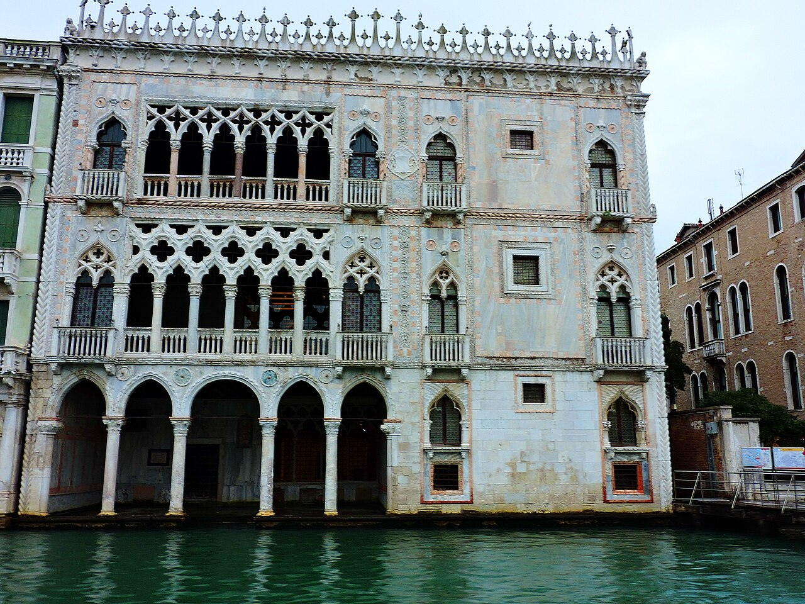
Once gilded and polychrome, the lace-like façade reads best from the vaporetto; inside is the Franchetti Gallery.
Merchant-elite residences broadcast status on the canal; later collectors turned palazzi into museums.
One of the purest Gothic façades on the Grand Canal.
Museo del Settecento Veneziano
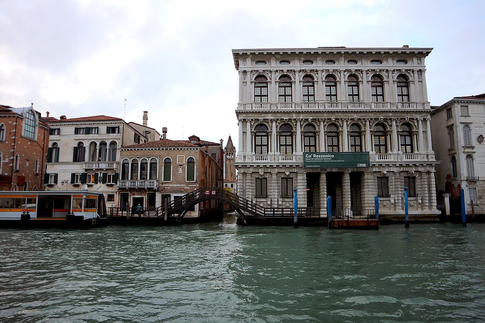
Period rooms, fresco ceilings, and social history of the Settecento—Venice at its theatrical, late-republic peak.
Palazzo fortunes shifted with trade decline; museum use preserves domestic grandeur for public viewing.
Best place to feel Venetian domestic luxury rather than civic power.
Ca' Rezzonico (Venice).jpg
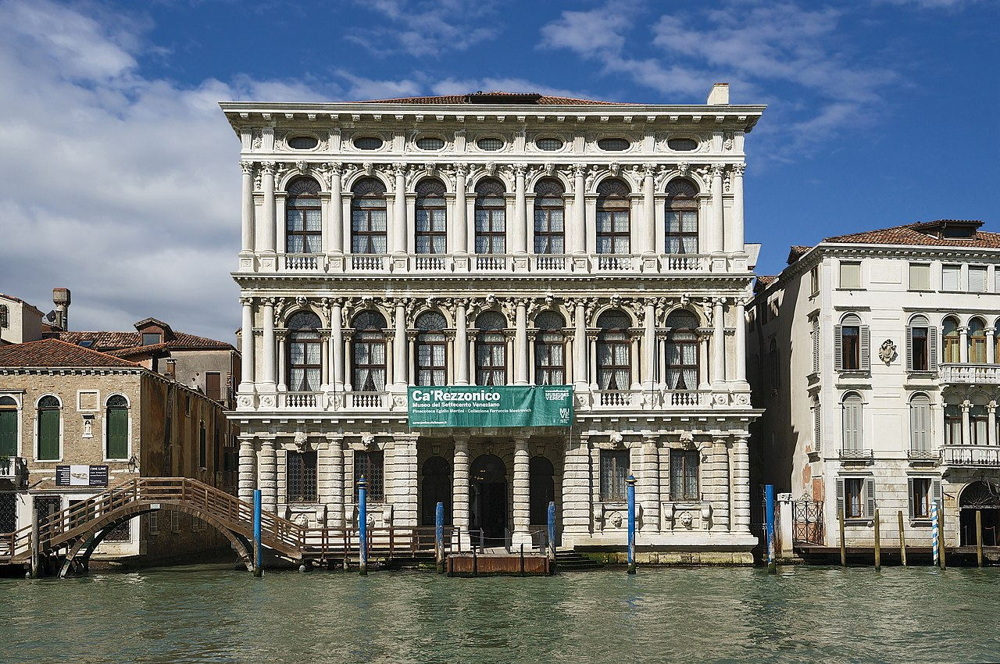
San Polo
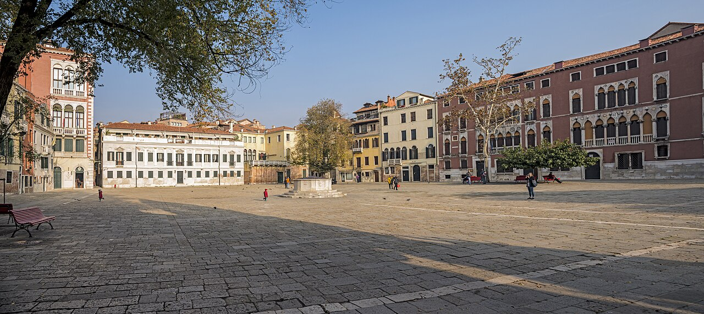
One of Venice's biggest open spaces; hosts seasonal events and markets with a more spacious feel than tight lanes.
Campos were the civic rooms of each parish; San Polo's scale reflects dense trade district importance.
A breathing space in the city's most compact sestiere.
Dorsoduro
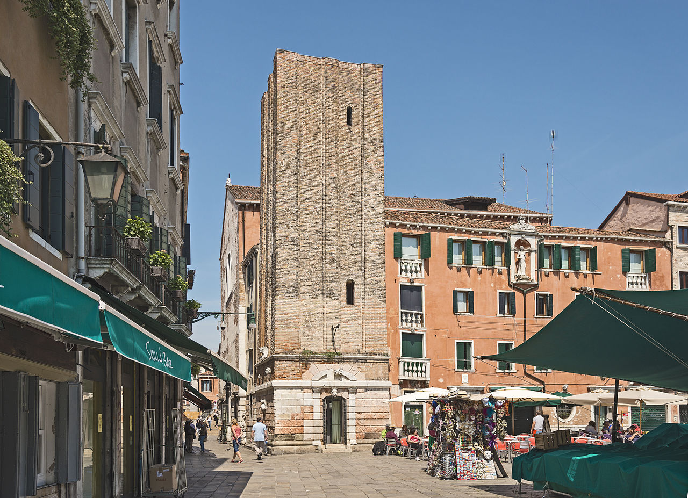
A lively square for aperitivo, markets, and late-night chatter—more local than the San Marco circuit.
Campos functioned as community plazas—wells, churches, and commerce—before modern retail.
A reliable place to feel Venice as lived city, not only monument.
Palazzo Ducale
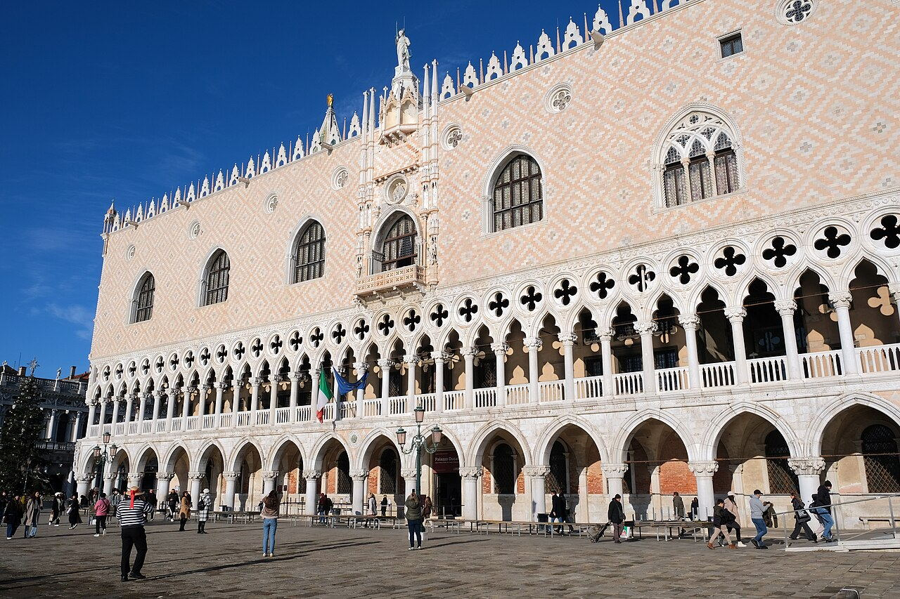
Arcaded loggias and pink-white stone diamond patterns hide council rooms, prisons, and state corridors once used to administer an empire of ports.
Rebuilt after fires and political reforms; the palace is a layered machine for governance, secrecy, and public display.
Architectural emblem of the Serenissima and its oligarchic institutions.
Gallerie dell'Accademia
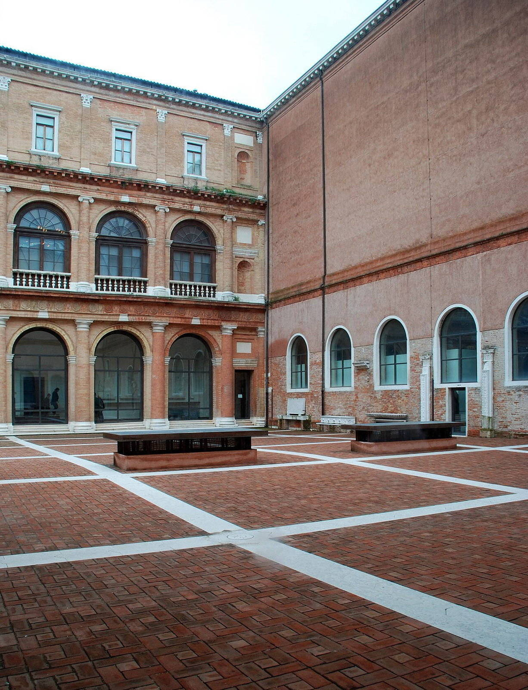
The key museum for Venetian painting—Bellini, Titian, Veronese—plus a bridge-view terrace nearby.
Napoleonic suppressions and later Italian state policy consolidated art into public museums.
Best single stop for understanding Venetian color and light on canvas.
Giardini
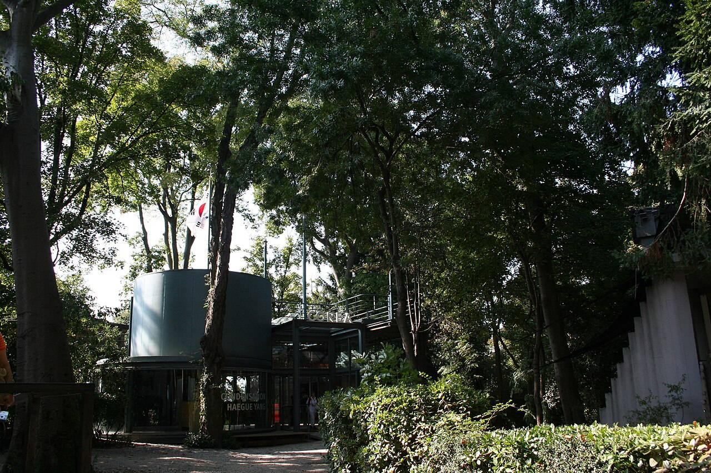
Tree-lined paths lead to permanent national pavilions; outside Biennale season it feels like a quiet public park near the lagoon.
Imperial-era gardens became a global art forum and a recurring urban event machine.
Where Venice hosts contemporary culture at international scale.
Canal Grande

Vaporetto rides reveal a moving museum of façades from Byzantine to Baroque; mornings are calmer before day-tripper peaks.
Trade wealth built merchant palaces and water doors; later, tourism kept the canal as Venice's central corridor.
The city's primary spatial axis—Venice understood as a floating streetscape.
Museo Ebraico di Venezia
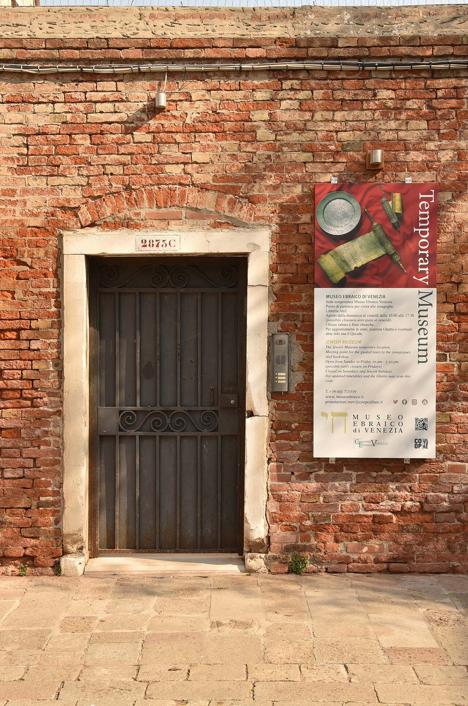
Small museum with guided access to synagogues; the ghetto campo retains a quiet gravity compared to San Marco crowds.
From 1516 legal enclosure to evolving community life; later remembrance work reframed the district.
Key site for European Jewish urban history and Venetian diversity.
Teatro La Fenice
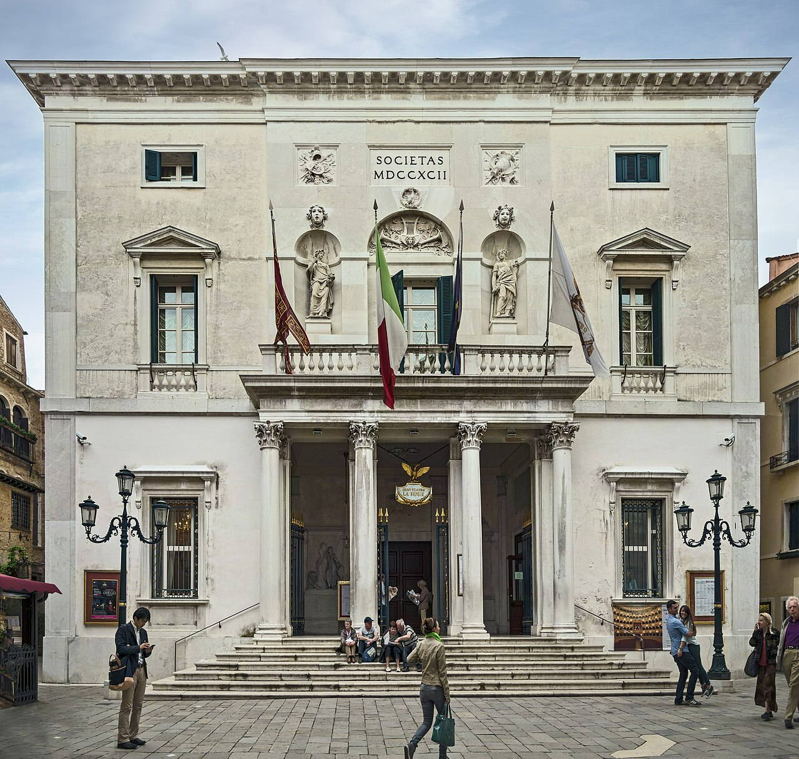
Tours reveal gilded boxes and stagecraft; performances are a splurge but acoustics and ornament justify it.
Rebuilding cycles match the name 'Phoenix'—rising from ashes repeatedly.
One of Europe's most famous opera houses and a symbol of Venetian resilience.
Lido di Venezia
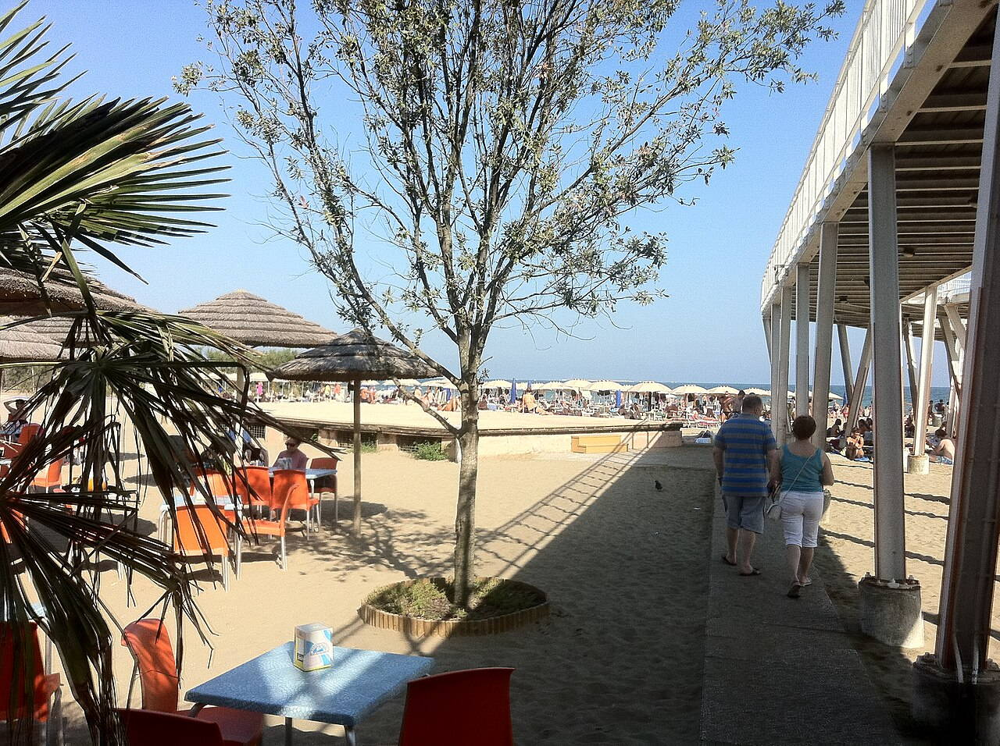
Beach walks, cycling, and film-festival glamour; the Lido offers a different Venice rhythm with straight streets and sand.
Modern leisure culture transformed the island into a grand-hotel destination.
Venice's seaside face—health, bathing, and cinema.
Lido
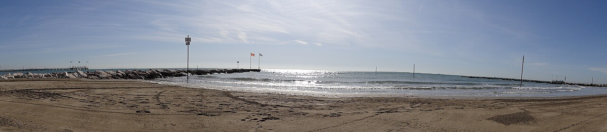
Long sand stretches and cabana rows offer a simple reset from stone and water; go early for quiet and light.
Modern bathing culture and hotel development turned the barrier island into a leisure brand.
Venice's literal beach—rare for a lagoon city in the popular imagination.
Biblioteca Nazionale Marciana

One of Europe's great humanist libraries; reading rooms hold manuscripts and printed treasures of the Republic.
Republic invested in scholarship and public display of learning beside state power.
Symbol of Venice as a publishing and intellectual hub.
Mosque, Canton.jpg

Isola di Murano
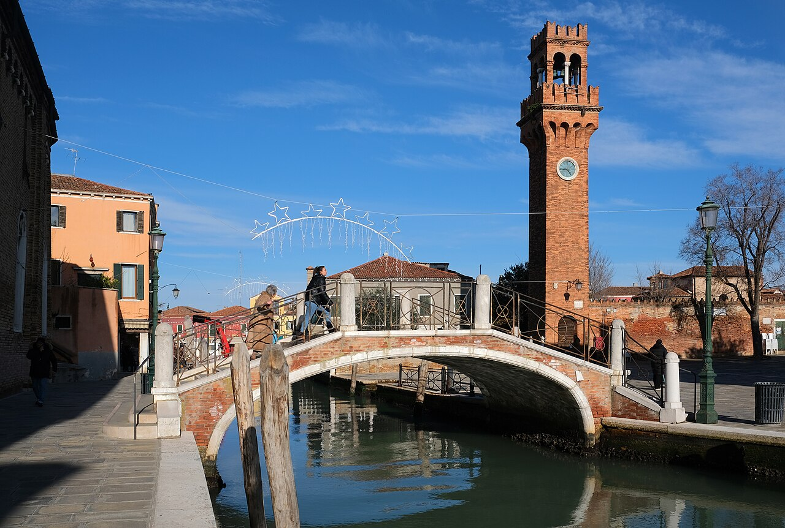
Furnaces and showrooms display glass artistry; visit a workshop for demonstrations if you can handle sales pressure.
Guild secrecy and state control protected high-value craft knowledge; modern global branding followed.
Signature artisan industry that financed Venetian luxury.
Scala Contarini del Bovolo
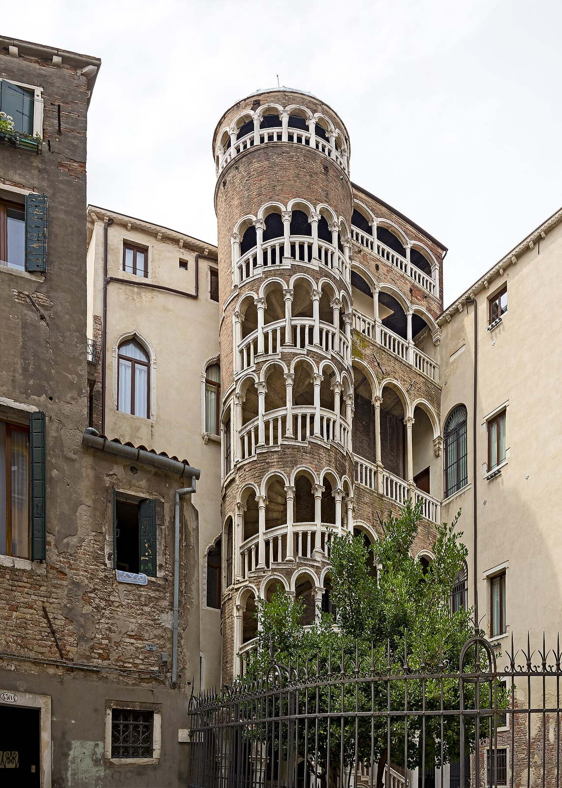
A corkscrew exterior stair climbs to a small terrace with rooftops and campanili—a quieter alternative to the main bell tower.
Noble families built theatrical staircases as status signals within dense urban plots.
A compact architectural curiosity with high photographic payoff.
Palazzo Tiepolo (Venice).jpg
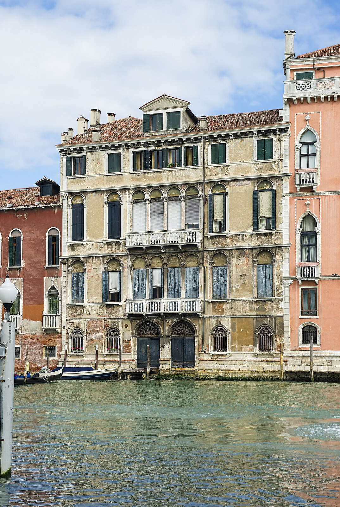
Collezione Peggy Guggenheim

A compact, high-impact modern collection in a domestic-scale palazzo; garden sculptures and canal terrace are highlights.
Postwar collecting and patronage inserted modern art into Venice's historic fabric.
Best small museum stop for 20th-century art in the city.
Piazza San Marco

Venice's principal public room: basilica, campanile, palazzo, and cafés share a single stage where tide and light constantly rewrite the scene.
Expanded from a small forecourt into a monumental piazza as the Republic's power and ritual grew around St Mark's relic cult.
The best single place to read Venice as republic, pilgrimage, and spectacle.
Piazza San Marco, Venice - Italy. - Flickr - Stavros A..jpg
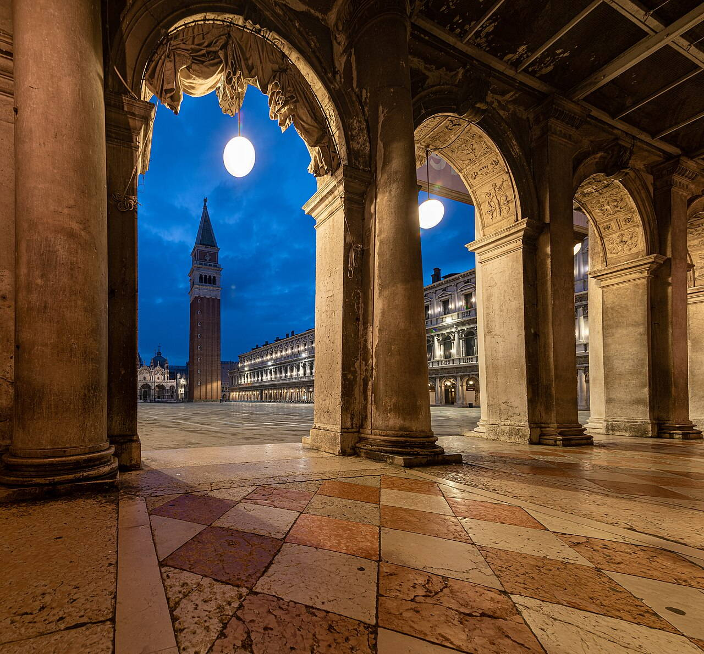
Punta della Dogana

A sharp prow of stone where canals meet; contemporary exhibitions use Ando's concrete minimalism against old brick.
From taxation and quarantine logistics to art patronage and adaptive reuse.
Best example of contemporary architecture interventions inside Venice's historic shell.
Ponte di Rialto
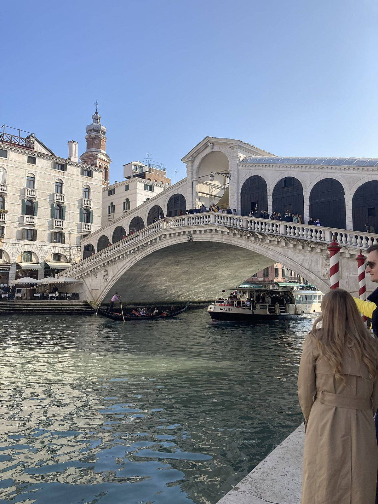
A single bold arch carries shops above the canal's tightest commercial pinch point; best visited early for fewer crowds.
Built after long debate over engineering risk; the stone solution proved durable and iconic.
Instant symbol of mercantile Venice and its waterborne economy.
San Francesco della Vigna
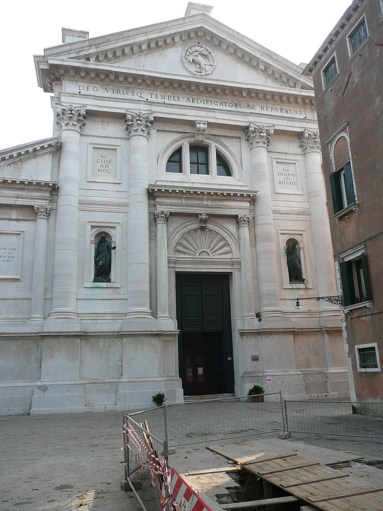
A quiet Franciscan church with a crisp classical façade; interior chapels include aristocratic patronage.
Religious orders and noble families shaped Castello's spiritual geography away from tourist center.
A calmer, architectural Venice beyond the main loop.
Basilica di San Giorgio Maggiore
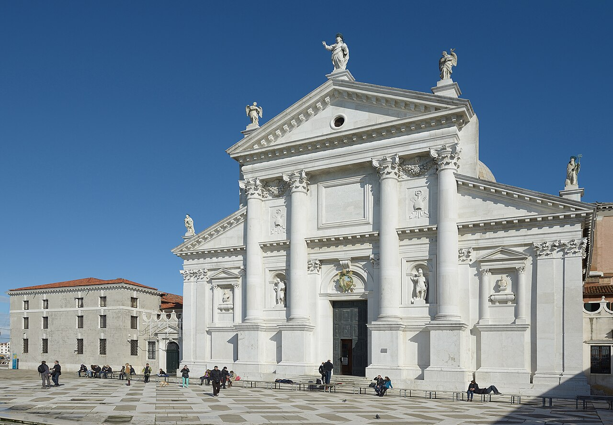
A calm island church with a bell tower you can climb for a less crowded San Marco panorama across the water.
Monastic island became a visual counterweight to ducal Venice across the basin.
Essential Palladio in situ and a prime viewpoint for the city silhouette.
San Sebastiano (Venice) Facade.jpg
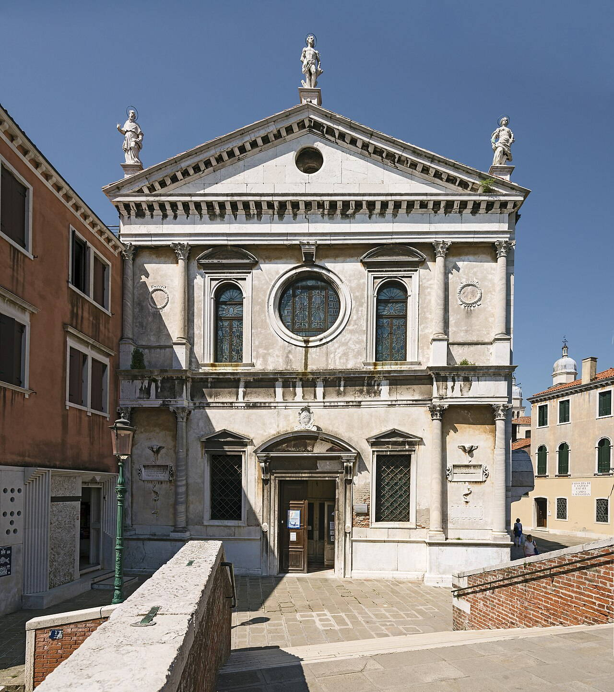
San Zaccaria
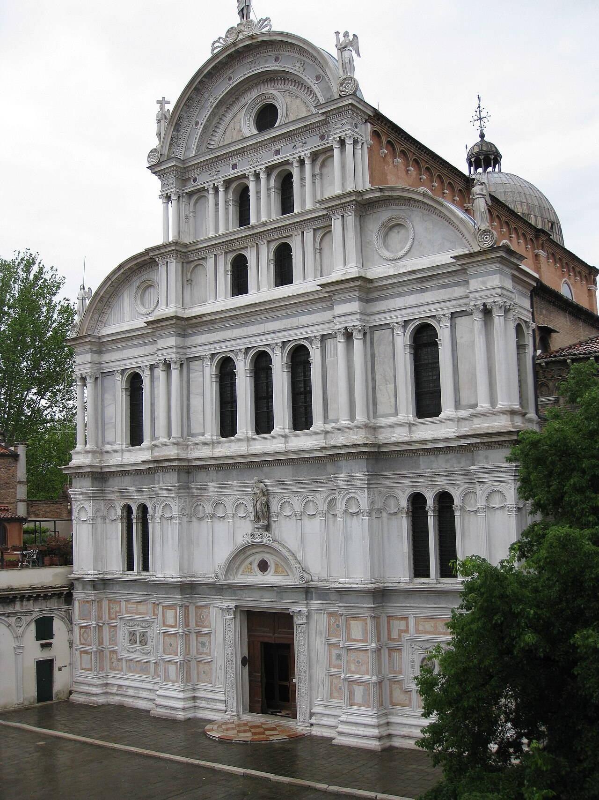
Known for luminous interior and Bellini altarpiece; the convent history adds depth to the neighborhood's calm pocket.
Monastic patronage and evolving styles created a hybrid church at the edge of the ducal core.
One of the city's most rewarding churches for painting and atmosphere.
Marble church
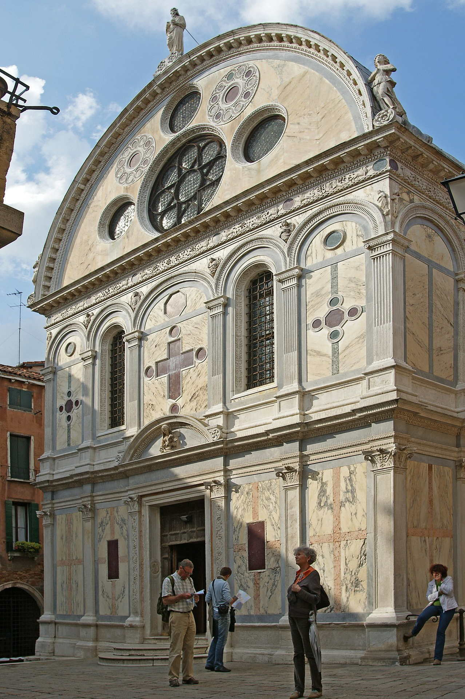
Small and intensely decorated, with patterned marble and a raised presbytery stair—often quiet compared to larger churches.
Icon cult and private patronage produced a concentrated Renaissance statement in a residential district.
One of Venice's most beautiful small churches for materials and proportion.
Basilica di Santa Maria della Salute
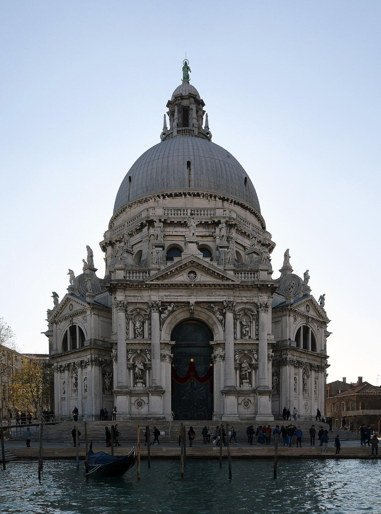
A white dome and spiral volutes anchor postcard views from San Marco; inside, light washes over altars tied to plague memory.
The basilica formalized public health crisis into civic ritual at a key water junction.
Baroque skyline marker and living plague memorial.
Campo Santa Maria Formosa
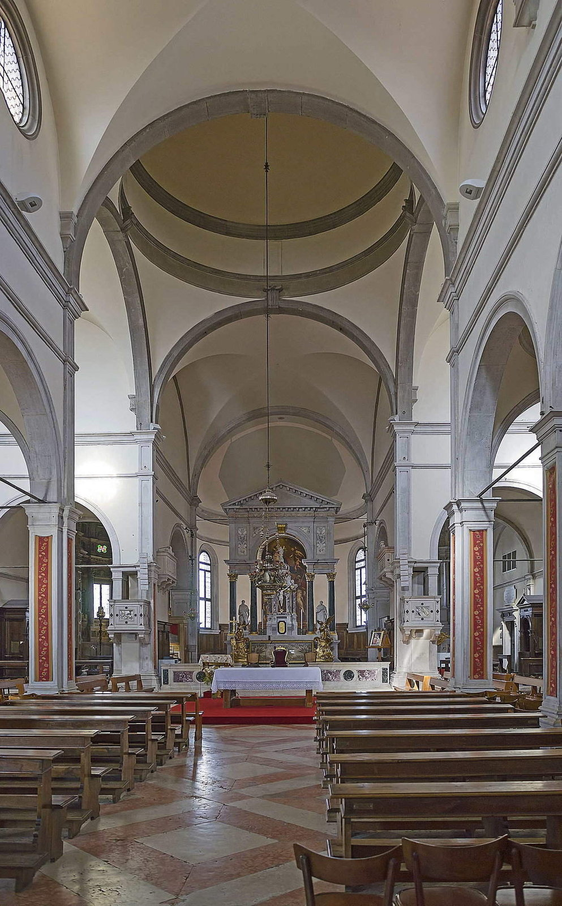
A spacious campo and a church with multiple façades; a good stop when walking from Rialto toward the eastern districts.
Parish churches structured Venetian daily life through guilds, markets, and festivals.
Everyday Venice: parish architecture and campo urbanism.
Tintoretto
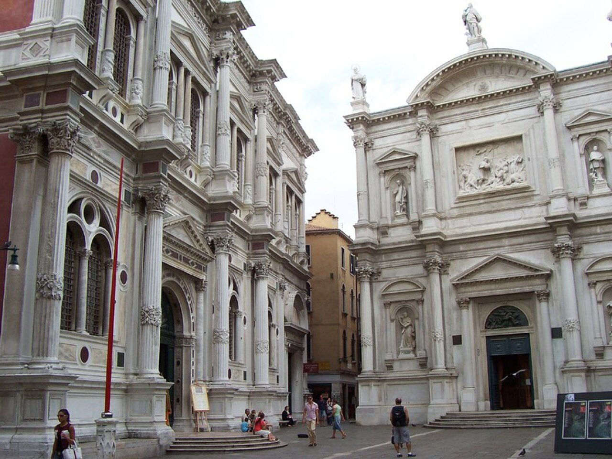
Tintoretto's dark, dramatic canvases cover ceilings and walls—an immersive, almost cinematic experience.
Lay confraternities funded charity and art; plague devotion generated one of Europe's great cycles.
A masterpiece of Venetian painting in its original architectural setting.
Basilica di San Marco
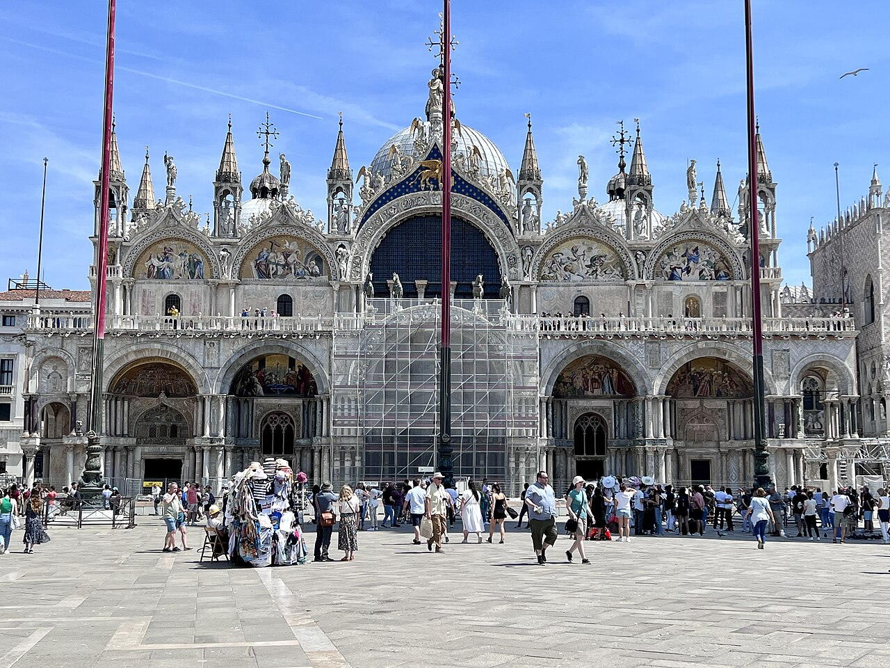
Golden mosaics and dim vaults feel closer to the eastern Mediterranean than to mainland Italy; queues are long in high season.
The Republic decorated the basilica with trophies of trade and conquest, making the church a public treasury of materials and images.
Venice's spiritual and political core—church as state icon.
Campanile di San Marco
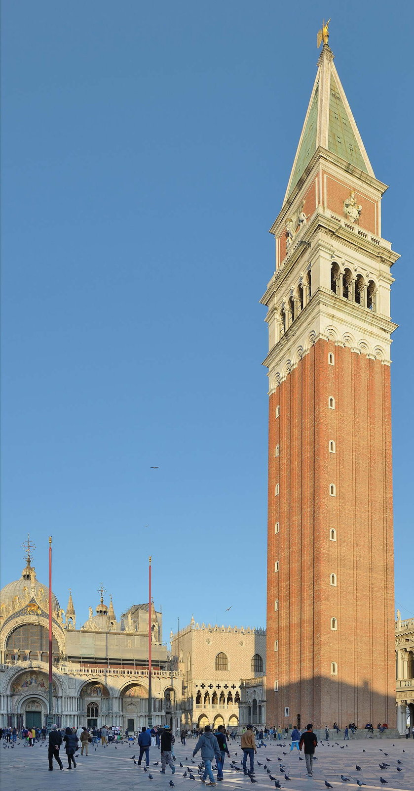
Elevator ascent yields the classic aerial of canals and lagoon; the rebuilt tower keeps the earlier silhouette by design.
Medieval watchtower became emblem; the 1902 collapse triggered a careful reconstruction program.
Primary vertical reference point for Venice's flat roofscape.
Torre dell'Orologio
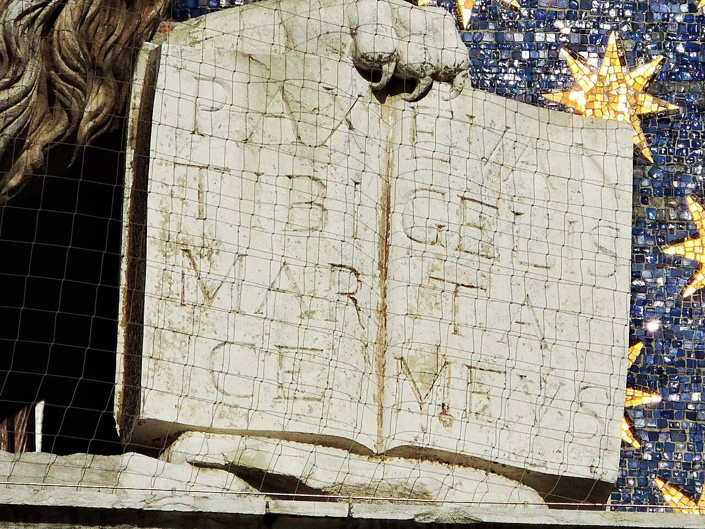
Blue-and-gold zodiac dial and the Moors striking the bell punctuate the shopping axis into the city.
Built to regulate merchant and civic time at the mouth of Venice's retail arteries.
Timekeeping as public architecture in a trading republic.
Arsenale di Venezia
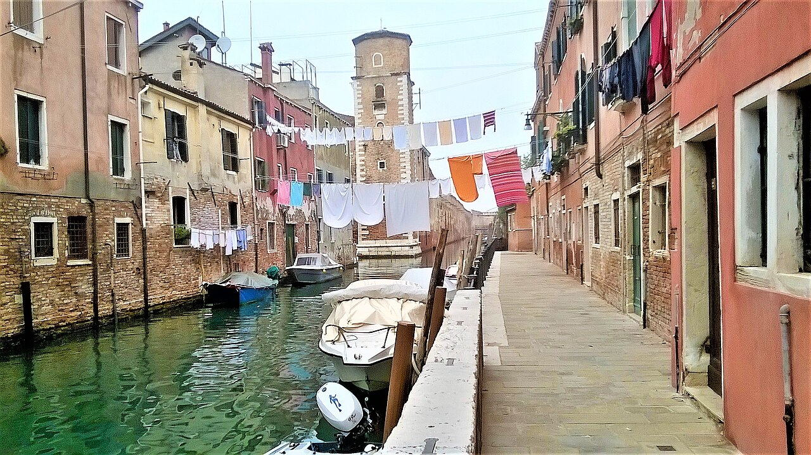
Once the shipbuilding engine of an empire; parts open during the Biennale and occasional tours.
State-controlled production supported naval dominance; later military uses restricted access for centuries.
Industrial heart of the Republic—Venice as manufacturing power, not only art city.